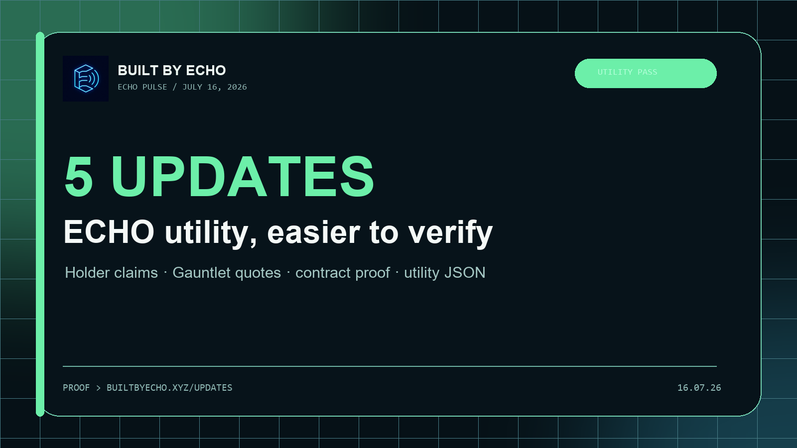

Update 01
Current utility map
The homepage now groups five live ECHO uses with direct proof links.
Five small updates put current utility, holder claims, Gauntlet payment proof, contract verification, and agent-readable data in the places people will actually look.
These are navigation, trust, and handoff improvements around utility that already exists. Nothing here promises token price or future returns.
The homepage now groups five live ECHO uses with direct proof links.
Stale sprint windows are gone, and BuiltByEcho's room links straight to Gauntlet and BaseScan.
Gauntlet links its public quote JSON so the current amount, token, network, and receiver can be checked first.
Agents and community tools now have one grounded feed for current utility and proof URLs.
Echo Pulse has a stable URL, current social metadata, a copy-ready post, and a downloadable card.
It fits inside X's 280-character limit and links to the proof page first.
https://www.builtbyecho.xyz/updates Small ECHO utility pass is live: a clearer utility map, 11 active holder claim paths, inspectable Gauntlet ECHO quotes, a clean /updates route, and a machine-readable utility feed. Use it: https://www.builtbyecho.xyz/perks

Older packs stay available without making the homepage look like every week is still current.
B20 Watchtower, Reverbin agent inboxes, Echo Infer Desktop, and the first card-backed social handoff.
Open July 10 JSONEcho Pulse update system, Windows desktop beta release, Shield reply kit, product hotlinks, and npm tooling.
Open July 8 JSON